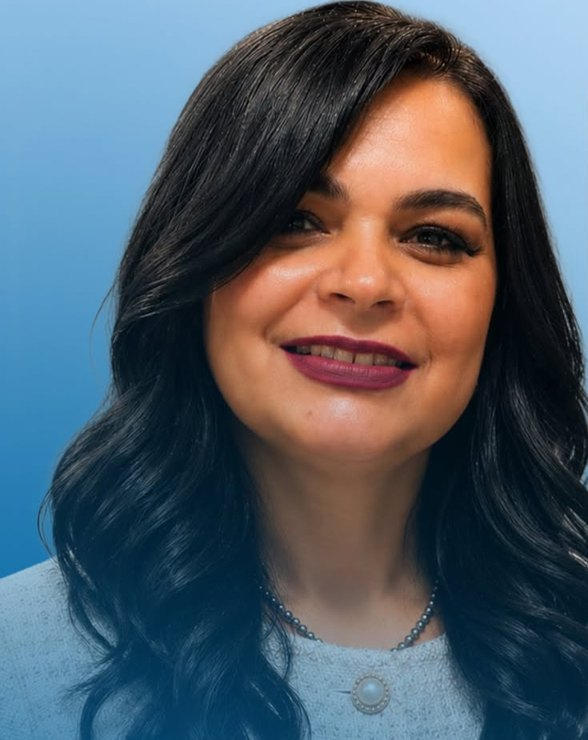

About ONTiC
Advancing thoracic oncology, together: one mission, better lung cancer outcomes through shared science.

OncoThoracic International Cancer Association
ONTiC brings together oncologists, surgeons, radiologists, pathologists, nurses, scientists and patient leaders to accelerate progress against thoracic cancers, with solutions that respect local contexts while aligning to global standards.
Our vision: a world where every lung cancer patient can access care informed by the latest global evidence, delivered by a connected, continuously educated multidisciplinary community.

Prof. Ola Khorshid
On behalf of the Organizing Committee, I welcome you to ONTiC: Best of Lung Cancer Congresses. We will bring national and international thoracic oncology experts together to share advances, best practice and collaborative initiatives in lung cancer research and care. Thank you for your commitment, and I invite you to take an active part.
President of the Congress, President of ONTiC, Chair of Medical Oncology, National Cancer Institute, Cairo UniversityWhat guides the congress
Scientific Excellence
Programs built on evidence-based oncology science and the latest global trial data.
Collaboration
Uniting societies, institutions and clinicians across borders.
Multidisciplinary Care
Bridging oncology, pulmonology, thoracic surgery, radiology and pathology.
Patient Impact
Sessions designed to translate into better patient outcomes.
Congress objectives
- Present and critically evaluate practice-changing advances reported at WCLC, ELCC, ASCO and ESMO.
- Translate scientific discoveries into evidence-based practice across diverse healthcare systems.
- Strengthen international and regional collaboration among thoracic oncology leaders.
- Advance equity, innovation and patient-centered approaches to lung cancer prevention, diagnosis and management.
From 2019 to today
First ONTiC Congress in Cairo.
Second edition, establishing an annual event.
Program expanded to include pulmonology, thoracic surgery, radiology and pathology.
International faculty join the program.
Network grows to new member centers across North Africa and the Balkans.
ONTiC Cairo Congress on interventional pulmonology and thoracic oncology.
Memorandum of understanding signed with the Egyptian Cancer Society and ASCO in Chicago.
Inaugural Best of Lung Cancer Congresses.
Return to Cairo, 3-4 December at Marriott Zamalek, with an expanded network of global partners.